Un reino, tres territorios y un problema
La misión del Reino Tritón comienza.
Imaginá un enorme reino llamado Reino Tritón.
El reino tiene un castillo central y, muy lejos de él, existen tres territorios importantes:
- ☁️ AWS
- ☁️ Azure
- ☁️ GCP
El Rey necesita saber constantemente qué está ocurriendo en esos territorios.
Pero existe un problema.
Los territorios están lejos y las comunicaciones no siempre funcionan correctamente. A veces:
- AWS tarda demasiado en responder.
- Azure no responde.
- GCP devuelve información incorrecta.
- La red que conecta al castillo con un territorio falla.
- Incluso pueden ocurrir varios problemas al mismo tiempo.
El Rey entiende que no puede controlar todo esto de manera improvisada.
Entonces reúne a sus especialistas y les dice:
—Necesito un sistema que reciba mis órdenes, consulte los tres territorios al mismo tiempo, detecte exactamente qué salió mal y deje un registro de todo lo ocurrido.
Y así comienza la misión del Reino Tritón.
La Puerta del Castillo
Ninguna información incorrecta puede entrar al castillo.
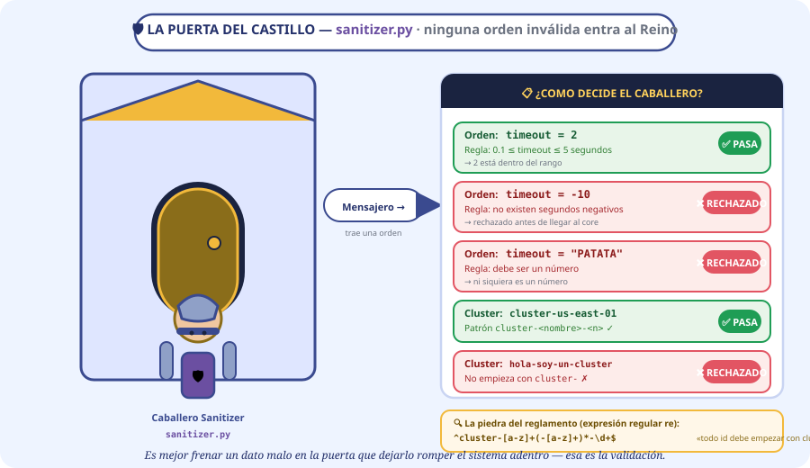
Antes de comenzar cualquier misión existe una regla fundamental:
ninguna información incorrecta puede entrar al castillo.
Para encargarse de esto, el Rey tiene un guardia especial:
🛡️ El Caballero Sanitizer
Su trabajo es revisar las órdenes que llegan desde el exterior.
Este personaje representa:
⏱️ La primera orden
Un mensajero llega corriendo.
El mensajero le da una instrucción:
timeout = 2El caballero revisa la regla del reino. El tiempo permitido debe estar entre 0.1 y 5 segundos.
Entonces responde:
🚫 Una orden imposible
Poco después llega otro mensajero.
El caballero se sorprende. —¿Menos diez segundos? Eso no tiene sentido.
🥔 Una orden todavía peor
Llega otro mensajero.
El caballero mira el documento. —Eso ni siquiera es un número.
🧠 ¿Qué estamos aprendiendo?
- El castillo representa nuestro programa.
- La puerta representa la validación.
- El Caballero Sanitizer representa sanitizer.py.
Es mejor detener un dato incorrecto en la puerta que permitir que llegue al interior del sistema y provoque problemas más adelante.
🏷️ El nombre del territorio
El caballero también debe revisar los identificadores de los territorios. Por ejemplo:
cluster-us-east-01El nombre cumple las reglas.
Pero llega otro:
hola-soy-un-cluster-tal-vezEl caballero niega el acceso.
Para comprobarlo utiliza una regla llamada expresión regular (re). La regla
establece que el identificador debe seguir el patrón cluster-<name>.
Podemos imaginar que el caballero tiene una inscripción en una piedra:
«Todo identificador autorizado debe comenzar con cluster-.»
El Comandante y los Tres Mensajeros
Consultar tres territorios a la vez, sin esperar uno detrás de otro.
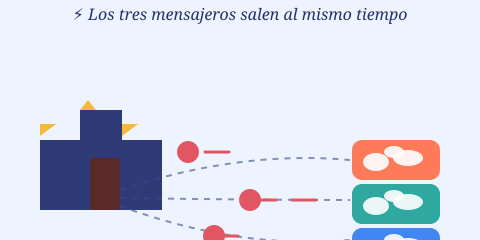
🎖️ El Comandante Core
Las órdenes ya fueron revisadas. Ahora comienza la verdadera misión. El Rey llama al Comandante Core.
Este personaje representa:
El Rey le da una orden:
—Necesito saber cómo están AWS, Azure y GCP.
El comandante mira el mapa. Los tres territorios están muy lejos. Entonces piensa:
—Necesito enviar tres mensajeros.
🐌 El método lento
El comandante podría hacer algo muy sencillo:
El mensajero sale.
🏃 → AWS
Pero el comandante debe esperar. ⏳ Finalmente vuelve: —AWS respondió.
Entonces el comandante dice: —Ahora andá a Azure. 🏃 → Azure
Otra vez: ⏳ Cuando vuelve: —Azure respondió. Y recién entonces: —Ahora andá a GCP. 🏃 → GCP / ⏳
Esto significa:
AWS → esperar → Azure → esperar → GCPEl problema es evidente: si un territorio tarda mucho, todo el proceso queda esperando.
⚡ El método inteligente
El Comandante Core tiene una idea mejor.
Levanta la mano y ordena:
—¡Los tres mensajeros salen al mismo tiempo!
Entonces ocurre esto:
🏰 CASTILLO
│
┌──────────┼──────────┐
▼ ▼ ▼
AWS AZURE GCP
Los tres comienzan su viaje. Esto es concurrencia.
🌉 El puente de AWS
El mensajero de AWS llega a un puente. 🌉 El puente está cerrado. Tiene que esperar. ⏳
Pero ahora ocurre algo diferente. El castillo no queda completamente detenido. Mientras AWS espera:
AWS → esperando ⏳
Azure → trabajando 🏃
GCP → trabajando 🏃
Cuando el puente de AWS se abre, el mensajero puede continuar.
⚡ Programación asíncrona
🧠 ¿Qué significan async y await?
Ahora aparecen dos personajes muy importantes.
async
async le indica al programa: «Esta función puede trabajar de manera asíncrona.» Es como decir:
—Esta misión puede tener momentos en los que necesita esperar sin bloquear todo el reino.
await
Cuando el mensajero encuentra el puente cerrado: —Necesito esperar. Eso es await.
Pero esperar no significa detener todo el castillo. Significa:
«Esta tarea espera, mientras otras tareas pueden continuar.»
AWS → await ⏳
Azure → continúa 🏃
GCP → continúa 🏃
👑 La sala de coordinación: TaskGroup
El Rey tiene ahora otro problema: hay tres misiones ejecutándose al mismo tiempo. Necesita mantenerlas organizadas.
Entonces construye una sala especial: 👑 TaskGroup. Dentro de ella quedan registradas las tres misiones:
TASKGROUP
│
├── Mensajero AWS
├── Mensajero Azure
└── Mensajero GCP
El TaskGroup permite tratar estas tareas concurrentes como un grupo estructurado. El Rey ya no tiene
tres misiones desorganizadas: tiene una expedición formada por tres tareas.
Las Palomas Mensajeras
Así se comunican los mensajeros con los territorios.
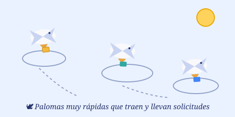
Los mensajeros necesitan comunicarse con AWS, Azure y GCP. Para eso el Reino utiliza:
🕊️ httpx.AsyncClient
Podemos imaginar que es un sistema de palomas mensajeras extremadamente rápido.
Una paloma:
- sale del castillo;
- lleva una solicitud;
- espera una respuesta;
- regresa con la información.
Lo importante es que la comunicación es asíncrona. Mientras una paloma espera una respuesta, otras tareas pueden continuar.
La Gran Tormenta
Cuando la red deja de cooperar: el Tribunal de Errores entra en acción.
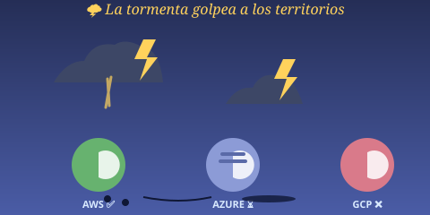
Los tres mensajeros ya están viajando. Pero de repente aparece una tormenta. 🌩️🌩️🌩️
Y ocurren tres situaciones diferentes.
AWS
AWS responde correctamente.
Azure
Azure nunca responde. ⏳ Pasa un segundo. ⏳ Pasan dos segundos. Nada.
GCP
GCP responde. El mensajero vuelve al castillo con una carta. El Rey la abre. La carta contiene información inválida.
Ahora el Reino necesita saber exactamente qué ocurrió. No sirve decir: «Algo salió mal.»
El Rey necesita información precisa. Por eso crea:
⚖️ El Tribunal de Errores
Este tribunal representa:
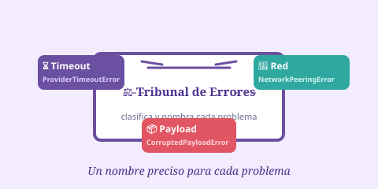
👑 El Rey de los Errores: TritonError
El tribunal tiene un jefe: 👑 TritonError. Todos los errores propios del Reino pertenecen a su familia.
TritonError
│
┌─────────┼─────────┐
▼ ▼ ▼
Timeout Payload Network
Técnicamente, TritonError deriva de Exception. La ventaja es que el Reino puede tener
errores propios que describen problemas específicos del sistema.
⏳ El caso de Azure
El mensajero de Azure finalmente informa: —Azure no respondió dentro del tiempo permitido.
El tribunal registra: ProviderTimeoutError
Este error significa: un proveedor tardó demasiado en responder.
📦 El caso de GCP
El mensajero de GCP trae una respuesta. Pero algo está mal: la información no tiene el formato esperado.
El tribunal registra: CorruptedPayloadError
Es decir: el mensaje recibido no es válido para lo que el sistema esperaba.
🌉 El caso de la red
Otro mensajero intenta llegar a un territorio. Pero encuentra un problema: 🌉 el puente está destruido. No puede establecer correctamente el camino de comunicación.
El tribunal registra: NetworkPeeringError
Esto representa un problema de conectividad o comunicación de red entre el sistema y el proveedor.
🧠 ¿Por qué no utilizar un solo error?
Imaginemos que un médico recibe tres pacientes:
- Paciente 1: 🤒 Fiebre.
- Paciente 2: 🦴 Pierna rota.
- Paciente 3: 😵 Desmayado.
El médico no dice simplemente: «Los tres están enfermos.» Necesita saber qué problema tiene cada uno.
Con los errores ocurre exactamente lo mismo.
"Algo salió mal" → ❌
"Hubo un timeout" → ✅
"Azure no respondió 2 s" → 🔥
Cuanto más precisa sea la información, más fácil será investigar y solucionar el problema.
Cuando Ocurren Varios Errores
La gran caja que guarda todos los errores a la vez.
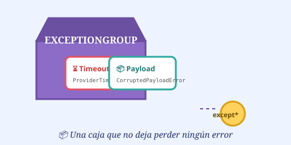
Ahora sucede algo todavía más complicado. Azure falla. Y casi al mismo tiempo GCP también falla.
Azure → ⏳ Timeout
GCP → 📦 Payload inválido
El problema es que no queremos perder ninguno de los dos errores. Si solamente capturamos uno, podemos perder información importante.
Entonces el Reino utiliza una gran caja: 📦 ExceptionGroup
Dentro de ella podemos guardar varios errores:
EXCEPTION GROUP
│
├── ProviderTimeoutError
│
└── CorruptedPayloadError
Ahora ambos problemas pueden viajar juntos.
🪓 El clasificador: except*
Pero alguien tiene que abrir la caja y organizar lo que contiene. Ese trabajo lo realiza except*.
El administrador dice: —Quiero todos los errores de timeout.
except* ProviderTimeoutErrorDespués: —Ahora quiero los errores de payload.
except* CorruptedPayloadErrorY después: —Ahora quiero los problemas de red.
except* NetworkPeeringErrorexcept* permite trabajar con diferentes tipos de errores que pueden existir
dentro de un grupo de excepciones concurrentes.
El Error Tiene una Historia
Conservar la causa original y dejar notas amarillas.
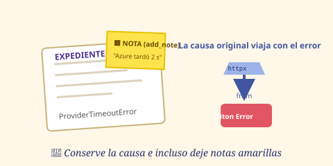
El Rey observa el expediente de Azure y pregunta: —¿Por qué ocurrió este ProviderTimeoutError?
El investigador responde: —Porque originalmente ocurrió otro error. Por ejemplo:
httpx.TimeoutException
│
▼
ProviderTimeoutError
El Reino crea entonces un error propio: ProviderTimeoutError. Pero no quiere destruir
la información del error original: quiere conservar la evidencia.
Para eso utiliza:
raise ProviderTimeoutError(...) from error_originalEsto significa:
«Estoy creando un error que tiene sentido para mi aplicación, pero quiero conservar la causa original.»
Así podemos seguir el camino del problema:
Problema original
↓
Error técnico
↓
Error del Reino
📝 La nota del investigador: add_note()
El investigador todavía puede agregar información adicional. Por ejemplo:
ProviderTimeoutError
Nota:
Azure no respondió después de 2 segundos.
Eso representa add_note(). Podemos imaginarlo como una nota amarilla pegada sobre el expediente. 🟨
El error principal sigue siendo el mismo, pero ahora tiene información adicional útil para investigar.
El Gran Archivista
Registrar toda la evidencia de manera estructurada.
Ahora el Reino tiene un problema: los errores están identificados, pero alguien debe guardar toda la información.
🕵️ El Gran Archivista
Este personaje representa:
Su trabajo es registrar lo ocurrido. Pero el Rey le da una orden:
—No quiero que escribas solamente «ocurrió un error».
El archivista debe registrar:
- cuándo ocurrió;
- qué tarea estaba ejecutándose;
- qué proveedor falló;
- qué error ocurrió;
- cuál fue la causa original;
- si existieron otros errores;
- información adicional útil para investigar.
Esto permite realizar un verdadero 🔎 análisis forense.
📜 El formato de los expedientes: JSON
El archivista podría escribir «Azure falló a las 10:30». Pero eso es solamente texto. El Reino necesita información organizada.
Entonces utiliza JSON:
{
"hora": "10:30",
"proveedor": "Azure",
"error": "ProviderTimeoutError"
}Podemos imaginar JSON como un formulario oficial.
NOMBRE → Juan
EDAD → 25
CIUDAD → La Rioja
En programación: clave → valor.
Esto permite que tanto las personas como los programas puedan interpretar la información de forma estructurada.
Las Cajas Dentro de las Cajas
Recursividad y el reloj del Reino.
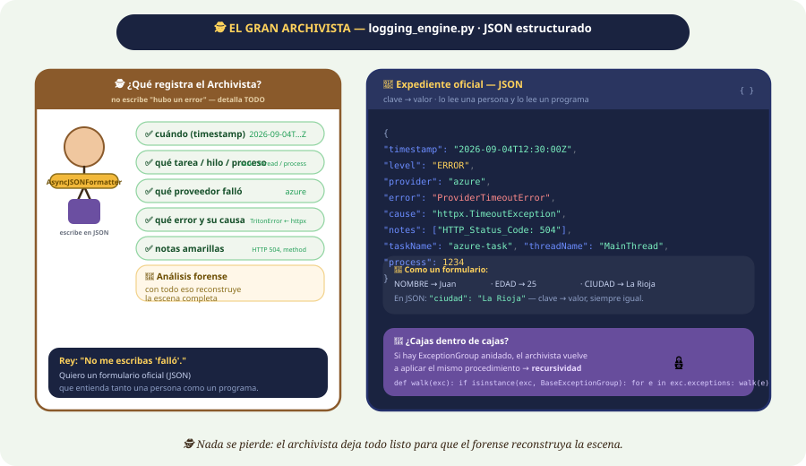
🌳 La recursividad
El archivista abre una caja de errores y encuentra:
CAJA PRINCIPAL
│
├── Error A
│
└── CAJA SECUNDARIA
│
├── Error B
└── Error C
Pero podría existir otra caja dentro. Y otra. Y otra. ¿Cómo puede investigar todas?
El archivista utiliza una misma estrategia una y otra vez. Eso se llama 🔄 recursividad.
«Si encuentro una caja dentro de otra caja, vuelvo a utilizar el mismo procedimiento para investigar la nueva caja.»
Por eso una función recursiva puede explorar estructuras de errores anidadas.
⏰ El libro del tiempo
El archivista también necesita saber exactamente cuándo ocurrió cada acontecimiento. No puede escribir «fue a la tarde»: eso sería demasiado ambiguo.
El Reino utiliza un formato estándar: ISO 8601 UTC.
2026-09-04T12:30:00ZAhora todos los castillos pueden utilizar una referencia temporal común.
Además, el archivista puede registrar información como: proceso, hilo y tarea asíncrona.
👷 Proceso, Hilo y Tarea
Podemos imaginarlos dentro del castillo:
- 🏰 Proceso — el castillo completo. Representa: process
- 👷 Hilo — un trabajador dentro del castillo. Representa: threadName
- 🏃 Tarea asíncrona — una misión concreta, p. ej. «Consultar Azure». Representa: taskName
Así el archivista puede reconstruir mejor lo sucedido: «Este problema ocurrió en este proceso, en este hilo y mientras se ejecutaba esta tarea.»
La Bandeja de Informes
Escribir nunca debe bloquear el trabajo principal.
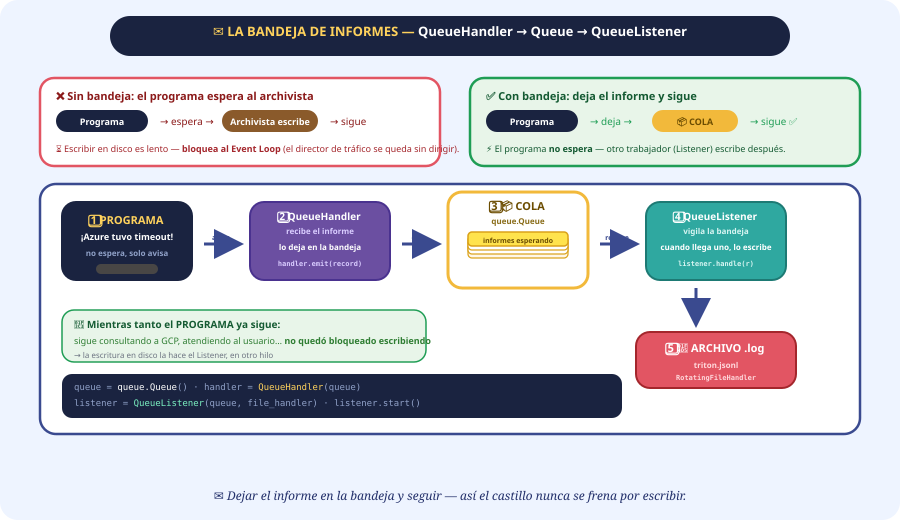
El Gran Archivista tiene otro problema: escribir los registros puede llevar tiempo. Si el programa tuviera que esperar al archivista cada vez que ocurre algo, sucedería esto:
Programa
↓
Espera al archivista
↓
Escribe el log
↓
Continúa
Eso puede bloquear el trabajo del sistema.
El Rey entonces tiene una idea:
—No quiero que el mensajero espere al archivista. Que deje el informe en una bandeja y continúe.
Así aparece: 📦 queue.Queue
✉️ QueueHandler
Cuando ocurre un acontecimiento —«¡Azure tuvo un timeout!»— el programa no espera. En lugar de eso, deja el informe en la bandeja.
PROGRAMA
│
▼
QueueHandler
│
▼
📦 COLA
Y el programa continúa trabajando.
📚 QueueListener
Mientras tanto, otro trabajador vigila la bandeja. Ese trabajador es QueueListener. Su trabajo es:
—Cuando llegue un informe, yo lo voy a recoger y registrar.
PROGRAMA
│
▼
QueueHandler
│
▼
📦 Queue
│
▼
QueueListener
│
▼
📖 ARCHIVO DE LOG
La escritura de los logs queda separada del trabajo principal. Esto ayuda a evitar que la escritura en disco bloquee el flujo de trabajo de
asyncio.
El Director de Tráfico
Quien decide qué tarea puede avanzar.
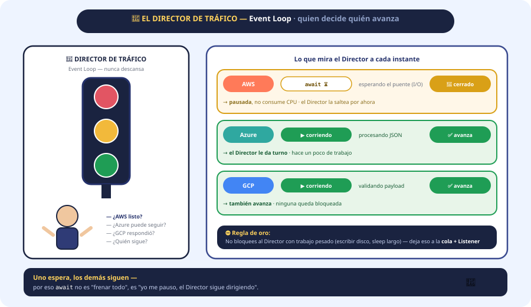
Dentro del castillo existe un personaje que nunca descansa: 🚦 El Director de Tráfico.
Está constantemente observando:
- —¿AWS está listo?
- —¿Azure sigue esperando?
- —¿GCP respondió?
- —¿Hay otra tarea que pueda continuar?
Este personaje representa: Event Loop.
El Event Loop coordina las tareas asíncronas y decide cuál puede avanzar.
Por eso existe una regla importante:
No debemos bloquear innecesariamente al Event Loop con operaciones lentas. Si el director se queda escribiendo un libro enorme, deja de dirigir el tráfico.
El Libro que Crece sin Parar
Rotación y compresión: el archivo nunca satura el reino.
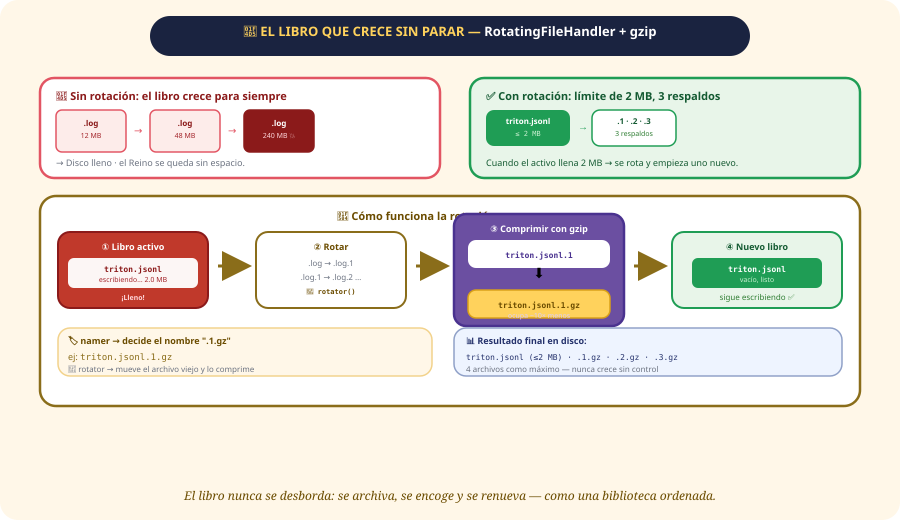
El archivista continúa escribiendo. 📕 Log. Después de un tiempo: 📕📕📕📕📕📕📕
El libro se vuelve enorme.
El Rey dice:
—No podemos permitir que el libro crezca para siempre.
Entonces establece una regla:
«Cuando el archivo llegue a 2 MB, debe comenzar uno nuevo.»
Esto representa RotatingFileHandler. El sistema mantiene:
- un archivo activo;
- hasta 3 archivos de respaldo.
Así los registros antiguos no ocupan espacio indefinidamente.
🗜️ La máquina que comprime los libros: gzip
Los libros antiguos siguen ocupando espacio. El Reino encuentra una solución.
Libro viejo
│
▼
COMPRESIÓN
│
▼
Libro viejo.gz
La información continúa existiendo, pero ocupa menos espacio.
🏷️ namer y 🔄 rotator
El Reino tiene dos empleados especiales:
- 🏷️
namer— decide cómo se llamará el archivo. - 🔄
rotator— se encarga de mover y comprimir el archivo antiguo durante la rotación.
Libro actual
↓
Se completa
↓
Se mueve
↓
Se comprime
↓
Se crea un nuevo libro
El Maestro de Ceremonias
Quien coordina a todos los personajes.
🎼 El Maestro de Ceremonias
Hasta ahora conocemos muchos personajes:
🛡️ Sanitizer · 🎖️ Comandante Core · ⚖️ Tribunal de Errores · 🕵️ Archivista · 🚦 Event Loop · 📦 QueueHandler · 📚 QueueListener
Pero alguien tiene que coordinar todo. Ese personaje es el Maestro de Ceremonias.
Representa:
Su trabajo es coordinar el funcionamiento general. Cuando llega un usuario, dice:
- —Caballero Sanitizer, revise las órdenes.
- —Comandante Core, inicie las consultas.
- —Tribunal de Errores, estén preparados.
- —Archivista, registre todo.
🖥️ La puerta del usuario: CLI
El usuario no necesita conocer todos los detalles internos del castillo. Simplemente escribe una orden:
triton --timeout 2 --mode debugEsta interfaz se llama CLI — Command Line Interface. Es la puerta mediante la cual el usuario se comunica con el programa.
🎮 El secretario: argparse
Pero alguien debe interpretar lo que escribió el usuario. Ese personaje es argparse.
El usuario escribe --timeout 2. El secretario interpreta: «El usuario quiere establecer un timeout de 2 segundos.»
Después entrega esa información al programa.
Usuario
↓
CLI
↓
argparse
↓
Validación
↓
Programa
La Limpieza Final
Pase lo que pase, siempre se limpia.
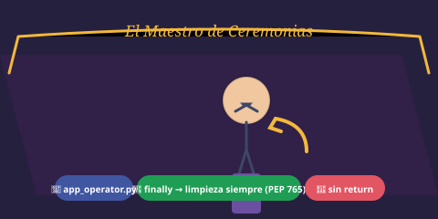
La misión finalmente termina. Puede ocurrir de dos maneras:
- 🎉 Todo salió bien; o
- 💥 Algo salió mal.
Pero existe algo que debe hacerse en ambos casos: limpiar correctamente los recursos utilizados. Por ejemplo:
- cerrar el listener de logs;
- liberar recursos;
- realizar las tareas necesarias antes de terminar.
Para eso existe finally.
Podemos imaginar al Rey dando una última orden:
«Pase lo que pase, antes de abandonar el castillo, hagan la limpieza.»
🚫 ¿Por qué no usar return dentro de finally?
Imaginemos que los investigadores todavía están trabajando en un caso. De repente alguien entra y grita: «¡Todos a casa!»
Si el sistema utiliza return dentro de finally, podría interferir con la propagación normal de errores
y con el control del flujo.
Por eso la limpieza debe limitarse a limpiar. No debería utilizar return, break ni continue
para alterar el flujo de control.
El Final de la Historia
El recorrido completo del Reino Tritón.
La misión del Reino Tritón ha terminado. Pero ahora podemos mirar hacia atrás y entender todo el recorrido.
👤 USUARIO
│
▼
🖥️ CLI
│
▼
🎮 argparse
│
▼
🛡️ Sanitizer
│
▼
🎖️ Core
│
├──────────┬──────────┐
▼ ▼ ▼
AWS Azure GCP
│ │ │
└──────────┼──────────┘
▼
⚡ Asyncio
│
▼
⚖️ Manejo de errores
│
┌──────┴──────┐
▼ ▼
Un error Varios errores
│ │
▼ ▼
Exception ExceptionGroup
│ │
└──────┬──────┘
▼
🕵️ Logging
│
▼
JSON
│
▼
📦 Queue
│
▼
📚 QueueListener
│
▼
📕 Archivos de log
│
▼
🔄 Rotación + gzip
│
▼
🧹 finallyY ahora podemos traducir los personajes al lenguaje técnico:
| 🏰 Historia | 💻 Python / Concepto |
|---|---|
| Puerta del castillo | Validación |
| Caballero Sanitizer | sanitizer.py |
| Reglas del nombre | Expresiones regulares (re) |
| Maestro de Ceremonias | app_operator.py |
| Secretario | argparse |
| Comandante | core.py |
| Mensajeros | Corrutinas / tareas |
| Misiones simultáneas | Concurrencia |
| No detener el castillo | Asincronía |
| Esperar sin bloquear | await |
| Misión asíncrona | async |
| Grupo de misiones | TaskGroup |
| Palomas mensajeras | httpx.AsyncClient |
| Tribunal | exceptions.py |
| Rey de los errores | TritonError |
| Mensajero que tarda demasiado | ProviderTimeoutError |
| Carta dañada | CorruptedPayloadError |
| Puente destruido | NetworkPeeringError |
| Caja de errores | ExceptionGroup |
| Clasificador | except* |
| Causa original | raise ... from |
| Nota del investigador | add_note() |
| Archivista | logging_engine.py |
| Expediente estructurado | JSON |
| Cajas dentro de cajas | Recursividad |
| Bandeja de informes | queue.Queue |
| Mensajero de informes | QueueHandler |
| Archivista que escucha | QueueListener |
| Director de tráfico | Event Loop |
| Libro de registros | Log |
| Renovar el libro | RotatingFileHandler |
| Compresor | gzip |
| Encargado del nombre | namer |
| Encargado de mover/comprimir | rotator |
| Limpieza final | finally |
🧠 La historia completa en una sola idea
Si mañana alguien te pregunta: «¿Qué hace el Proyecto Tritón?»…
No necesitás empezar hablando de asyncio, ExceptionGroup, QueueHandler
o RotatingFileHandler. Primero podés contar la historia:
Un usuario llega al castillo y entrega una orden. Un guardia verifica que la información sea válida antes de permitirle el acceso. Después, un comandante envía mensajeros simultáneamente a AWS, Azure y GCP. Mientras un mensajero espera una respuesta, los demás pueden continuar trabajando.
Si un territorio falla, el sistema identifica exactamente qué tipo de problema ocurrió. Si ocurren varios problemas al mismo tiempo, los agrupa para no perder información. Además, conserva la causa original del error y permite agregar notas para facilitar la investigación.
Después aparece un archivista que registra toda la evidencia de manera estructurada. Para evitar que escribir los registros detenga el trabajo principal, los informes pasan primero por una bandeja y otro trabajador se encarga de escribirlos. Cuando los archivos de registro crecen demasiado, se rotan y los antiguos se comprimen.
Finalmente, un maestro de ceremonias coordina todo el sistema y, cuando la misión termina, finally
garantiza que los recursos necesarios sean limpiados incluso si algo salió mal.
Y esa es la idea central del Reino Tritón:
🏰 Recibir → validar → ejecutar en paralelo → detectar errores → conservar evidencia → registrar → organizar → limpiar.
Si entendés ese recorrido, los nombres técnicos dejan de parecer una lista de palabras difíciles. Cada uno simplemente es un personaje que cumple una función dentro del castillo.